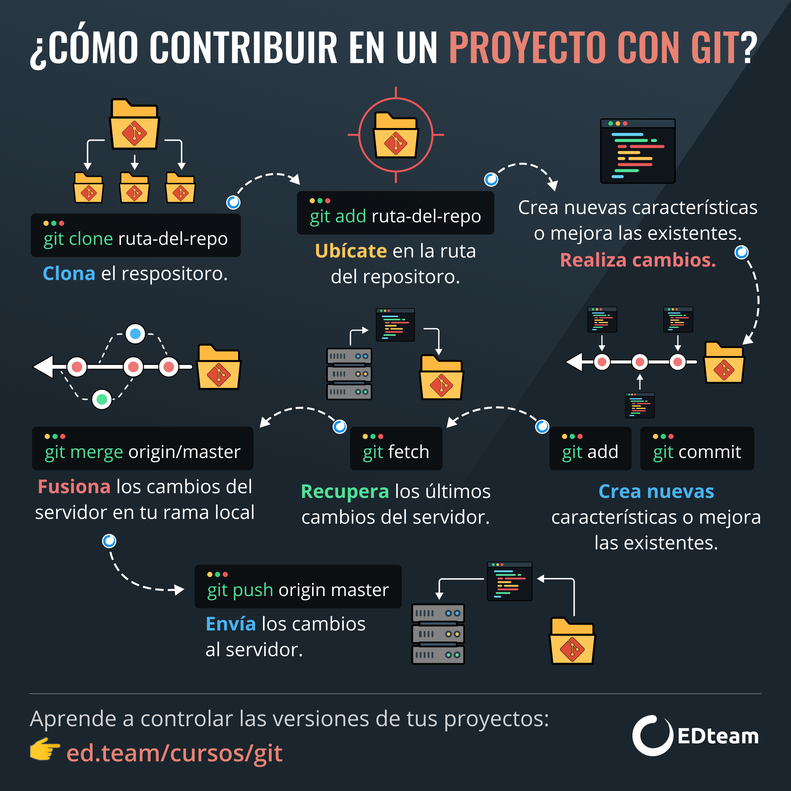

Pasos para subir tu proyecto local de Git a GitHub
Para integrar un proyecto creado con Git en tu computadora a GitHub, debes seguir estos pasos básicos. Esto te permitirá mantener una copia remota de tu proyecto y colaborar con otros desarrolladores.
- 1. Crea un repositorio en GitHub: Ve a GitHub y haz clic en "New repository". Copia la URL del repositorio que se genera.
-
2. Inicia Git en tu proyecto local: En la
terminal, navega a la carpeta de tu proyecto y ejecuta:
git init -
3. Agrega los archivos al repositorio: Usa
git add .para agregar todos los archivos. -
4. Realiza el primer commit: Ejecuta
git commit -m "Primer commit" -
5. Conecta con GitHub: Usa el comando
git remote add origin URL_DEL_REPOSITORIO -
6. Sube el proyecto: Ejecuta
git push -u origin main(omastersi ese es tu branch principal).
